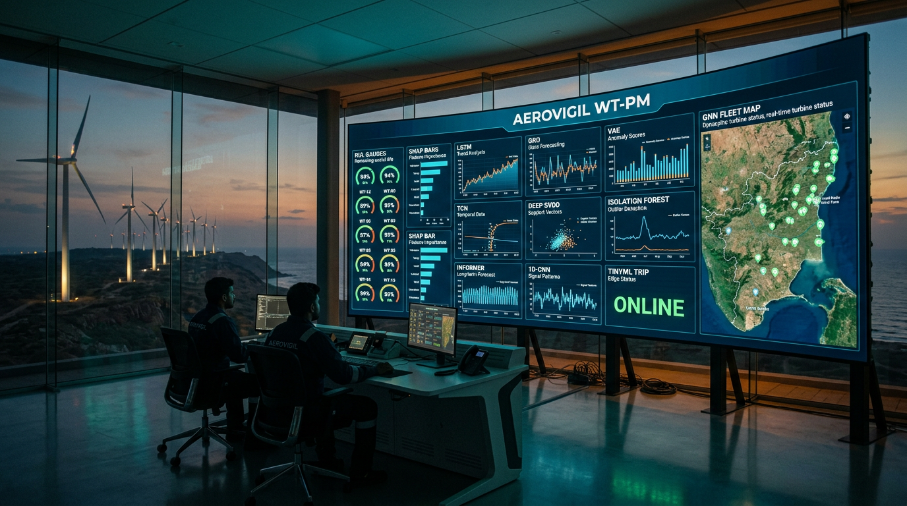
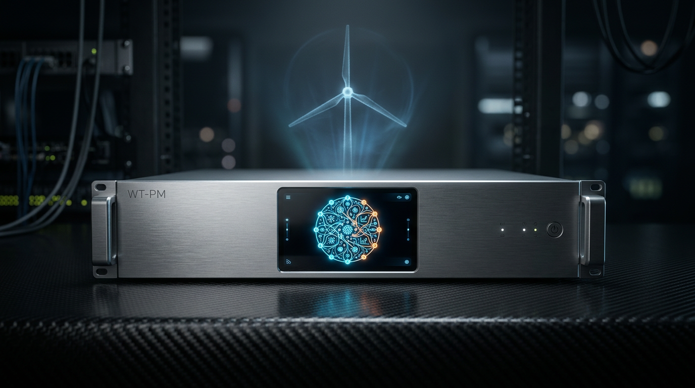
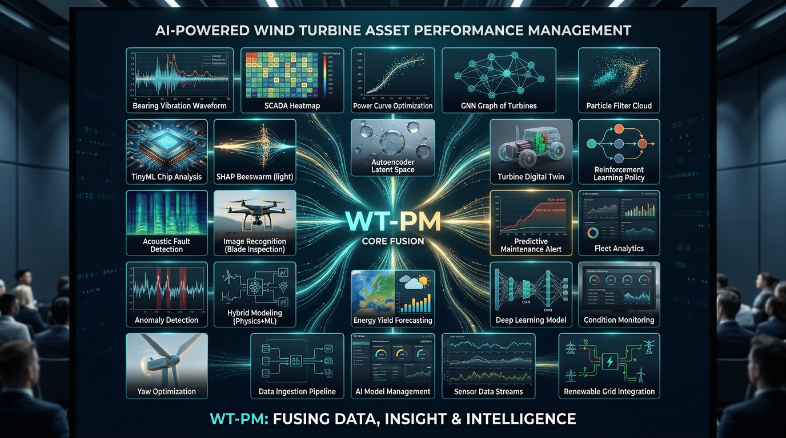
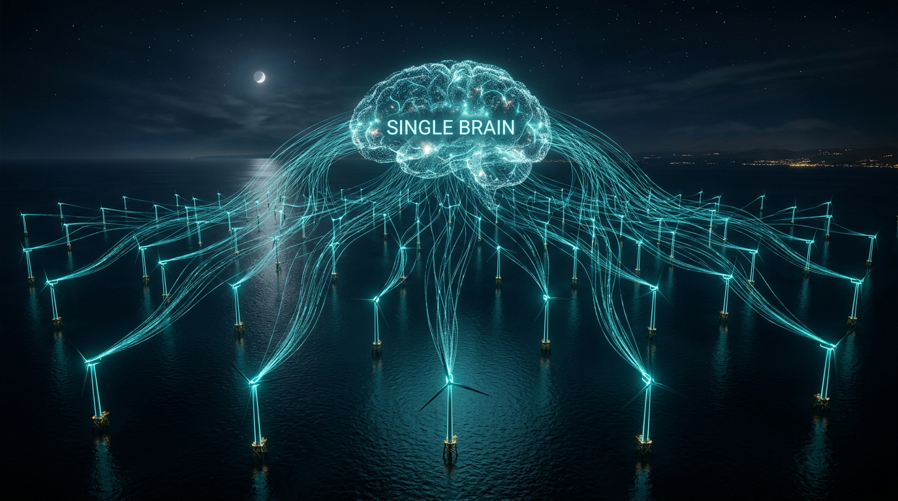
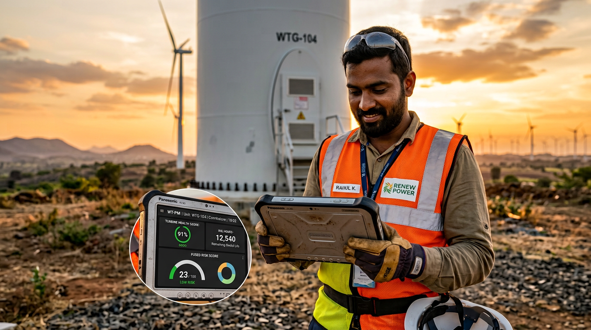
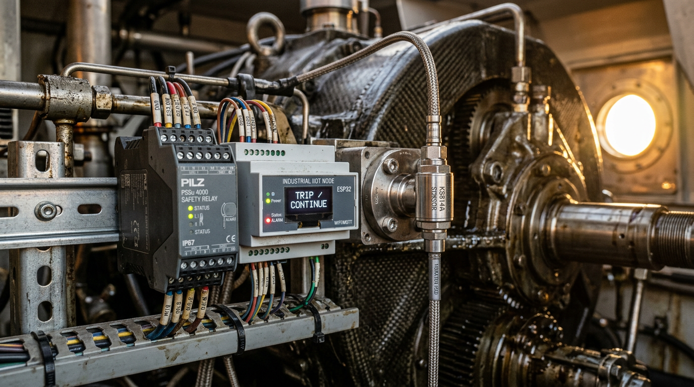

LSTM, GRU, VAE, Deep SVDD, isolation forest, TCN, Informer, CNN, GNN, RUL, TinyML, SHAP — fused into a single SCADA writeback: WTPM.ALARM / SCORE / RUL_H. Not twenty-five dashboards.





Under the hood they stay specialized. The product is the router, fusion, Hermes loop, and WTPM.* tags.
pip install -e platform wt-pm inspect wt-pm scada --demo wt-pm sil --rpm 26.5 --pitch 5